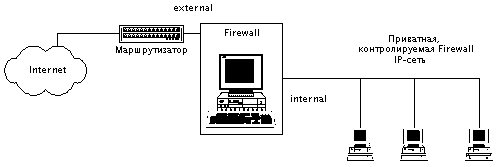
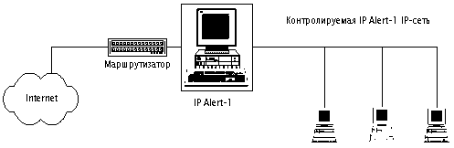

|
7.2. Программно-аппаратные методы защиты от
удаленных атак в сети Internet
К программно-аппаратным средствам обеспечения
информационной безопасности средств связи в
вычислительных сетях относятся:
- аппаратные шифраторы сетевого трафика;
- методика Firewall, реализуемая на базе
программно-аппаратных средств;
- защищенные сетевые криптопротоколы;
- программно-аппаратные анализаторы сетевого
трафика;
- защищенные сетевые ОС.
Существует огромное количество литературы,
посвященной этим средствам защиты,
предназначенным для использования в сети Internet
(за последние два года практически в каждом
номере любого компьютерного журнала можно найти
статьи на эту тему).
Далее мы, по возможности кратко, чтобы не
повторять всем хорошо известную информацию,
опишем данные средства защиты, применяемые в
Internet. При этом мы преследуем следующие цели:
во-первых, еще раз вернемся к мифу об
"абсолютной защите" , которую якобы
обеспечивают системы Firewall, очевидно, благодаря
стараниям их продавцов; во-вторых, сравним
существующие версии криптопротоколов,
применяемых в Internet, и дадим оценку, по сути, критическому
положению в этой области; и, в-третьих, ознакомим
читателей с возможностью защиты с помощью
сетевого монитора безопасности,
предназначенного для осуществления
динамического контроля за возникающими в
защищаемом сегменте IP-сети ситуациями,
свидетельствующими об осуществлении на данный
сегмент одной из описанных в 4 главе удаленных
атак.
7.2.1. Методика Firewall как основное
программно-аппаратное средство осуществления
сетевой политики безопасности в выделенном
сегменте IP-сети
В общем случае методика Firewall реализует
следующие основные три функции:
1. Многоуровневая фильтрация сетевого трафика.
Фильтрация обычно осуществляется на трех
уровнях OSI:
сетевом (IP);
транспортном (TCP, UDP);
прикладном (FTP, TELNET, HTTP, SMTP и т. д.).
Фильтрация сетевого трафика является основной
функцией систем Firewall и позволяет администратору
безопасности сети централизованно осуществлять
необходимую сетевую политику безопасности в
выделенном сегменте IP-сети, то есть, настроив
соответствующим образом Firewall, можно разрешить
или запретить пользователям как доступ из
внешней сети к соответствующим службам хостов
или к хостам, находящихся в защищаемом сегменте,
так и доступ пользователей из внутренней сети к
соответствующим ресурсам внешней сети. Можно
провести аналогию с администратором локальной
ОС, который для осуществления политики
безопасности в системе назначает необходимым
образом соответствующие отношения между
субъектами (пользователями) и объектами системы
(файлами, например), что позволяет разграничить
доступ субъектов системы к ее объектам в
соответствии с заданными администратором
правами доступа. Те же рассуждения применимы к
Firewall-фильтрации: в качестве субъектов
взаимодействия будут выступать IP-адреса хостов
пользователей, а в качестве объектов, доступ к
которым необходимо разграничить, - IP-адреса
хостов, используемые транспортные протоколы и
службы предоставления удаленного доступа.
2. Proxy-схема с дополнительной идентификацией
и аутентификацией пользователей на Firewall-хосте.
Proxy-схема позволяет, во-первых, при доступе к
защищенному Firewall сегменту сети осуществить на
нем дополнительную идентификацию и
аутентификацию удаленного пользователя и,
во-вторых, является основой для создания
приватных сетей с виртуальными IP-адресами. Смысл
proxy-схемы состоит в создании соединения с
конечным адресатом через промежуточный
proxy-сервер (proxy от англ. полномочный) на
хосте Firewall. На этом proxy-сервере и может
осуществляться дополнительная идентификация
абонента.
3. Создание приватных сетей (Private Virtual
Network - PVN) с "виртуальными" IP-адресами (NAT - Network
Address Translation).
В том случае, если администратор безопасности
сети считает целесообразным скрыть истинную
топологию своей внутренней IP-сети, то ему можно
порекомендовать использовать системы Firewall для
создания приватной сети (PVN-сеть). Хостам в PVN-сети
назначаются любые "виртуальные" IP-адреса.
Для адресации во внешнюю сеть (через Firewall)
необходимо либо использование на хосте Firewall
описанных выше proxy-серверов, либо применение
специальных систем роутинга (маршрутизации),
только через которые и возможна внешняя
адресация. Это происходит из-за того, что
используемый во внутренней PVN-сети виртуальный
IP-адрес, очевидно, не пригоден для внешней
адресации (внешняя адресация - это адресация к
абонентам, находящимся за пределами PVN-сети).
Поэтому proxy-сервер или средство роутинга должно
осуществлять связь с абонентами из внешней сети
со своего настоящего IP-адреса. Кстати, эта схема
удобна в том случае, если вам для создания IP-сети
выделили недостаточное количество IP-адресов (в
стандарте IPv4 это случается сплошь и рядом,
поэтому для создания полноценной IP-сети с
использованием proxy-схемы достаточно только
одного выделенного IP-адреса для proxy-сервера).
Итак, любое устройство, реализующее хотя бы
одну из этих функций Firewall-методики, и является
Firewall-устройством. Например, ничто не мешает вам
использовать в качестве Firewall-хоста компьютер с
обычной ОС FreeBSD или Linux, у которой соответствующим
образом необходимо скомпилировать ядро ОС. Firewall
такого типа будет обеспечивать только
многоуровневую фильтрацию IP-трафика. Другое
дело, предлагаемые на рынке мощные
Firewall-комплексы, сделанные на базе ЭВМ или
мини-ЭВМ, обычно реализуют все функции
Firewall-мето-дики и являются полнофункциональными
системами Firewall. На следующем рисунке изображен
сегмент сети, отделенный от внешней сети
полнофункциональным Firewall-хостом.

Рис. 7.1. Обобщенная схема полнофункционального хоста Firewall.
Однако администраторам IP-сетей, поддавшись на
рекламу систем Firewall, не стоит заблуждаться на тот
счет, что Firewall это гарантия абсолютной защиты от
удаленных атак в сети Internet. Firewall - не столько
средство обеспечения безопасности, сколько
возможность централизованно осуществлять
сетевую политику разграничения удаленного
доступа к доступным ресурсам вашей сети. Да, в том
случае, если, например, к данному хосту запрещен
удаленный TELNET-доступ, то Firewall однозначно
предотвратит возможность данного доступа. Но
дело в том, что большинство удаленных атак имеют
совершенно другие цели (бессмысленно пытаться
получить определенный вид доступа, если он
запрещен системой Firewall). Действительно, зададим
себе вопрос, а какие из рассмотренных в 4 главе
удаленных атак может предотвратить Firewall? Анализ
сетевого трафика (п. 4.1)? Очевидно, нет! Ложный
ARP-сервер (п. 4.2)? И да, и нет (для защиты вовсе не
обязательно использовать Firewall). Ложный DNS-сервер
(п. 4.3)? Нет, к сожалению, Firewall вам тут не помощник.
Навязывание ложного маршрута при помощи
протокола ICMP (п. 4.4)? Да, эту атаку путем фильтрации
ICMP-сообщений Firewall легко отразит (хотя достаточно
будет фильтрующего маршрутизатора, например Cisco).
Подмена одного из субъектов TCP-соединения (п. 4.5)?
Ответ отрицательный; Firewall тут абсолютно не при
чем. Нарушение работоспособности хоста путем
создания направленного шторма ложных запросов
или переполнения очереди запросов (п. 4.6)? В этом
случае применение Firewall только ухудшит все дело.
Атакующему для того, чтобы вывести из строя
(отрезать от внешнего мира) все хосты внутри
защищенного Firewall-системой сегмента, достаточно
атаковать только один Firewall, а не несколько хостов
(это легко объясняется тем, что связь внутренних
хостов с внешним миром возможна только через
Firewall).
Из всего вышесказанного отнюдь не следует, что
использование систем Firewall абсолютно
бессмысленно. Нет, на данный момент этой методике
(именно как методике!) нет альтернативы. Однако
надо четко понимать и помнить ее основное
назначение. Нам представляется, что применение
методики Firewall для обеспечения сетевой
безопасности является необходимым, но отнюдь
не достаточным условием, и не нужно считать,
что, поставив Firewall, вы разом решите все проблемы с
сетевой безопасностью и избавитесь от всех
возможных удаленных атак из сети Internet.
Прогнившую с точки зрения безопасности сеть Internet
никаким отдельно взятым Firewall'ом не защитишь!
7.2.2. Программные методы защиты,
применяемые в сети Internet
К программным методам защиты в сети Internet можно
отнести прежде всего защищенные
криптопротоколы, с использованием которых
появляется возможность надежной защиты
соединения. В следующем пункте пойдет речь о
существующих на сегодняшний день в Internet подходах
и основных, уже разработанных, криптопротоколах.
К иному классу программных методов защиты от
удаленных атак относятся существующие на
сегодняшний день программы, основная цель
которых - анализ сетевого трафика на предмет
наличия одного из известных активных удаленных
воздействий. Об этом пункт 7.2.2.2.
7.2.2.1. SKIP-технология и криптопротоколы SSL,
S-HTTP как основное средство защиты соединения
и передаваемых данных в сети Internet
Прочитав 4 и 5 главы, читатель, очевидно, уяснил,
что одна из основных причин успеха удаленных
атак на распределенные ВС кроется в
использовании сетевых протоколов обмена,
которые не могут надежно идентифицировать
удаленные объекты, защитить соединение и
передаваемые по нему данные. Поэтому совершенно
естественно, что в процессе функционирования
Internet были созданы различные защищенные сетевые
протоколы, использующие криптографию как с
закрытым, так и с открытым ключом. Классическая
криптография с симметричными криптоалгоритмами
предполагает наличие у передающей и принимающей
стороны симметричных (одинаковых) ключей для
шифрования и дешифрирования сообщений. Эти ключи
предполагается распределить заранее между
конечным числом абонентов, что в криптографии
называется стандартной проблемой статического
распределения ключей. Очевидно, что применение
классической криптографии с симметричными
ключами возможно лишь на ограниченном множестве
объектов. В сети Internet для всех ее пользователей
решить проблему статического распределения
ключей, очевидно, не представляется возможным.
Однако одним из первых защищенных протоколов
обмена в Internet был протокол Kerberos, основанный
именно на статическом распределении ключей для
конечного числа абонентов. Таким же путем,
используя классическую симметричную
криптографию, вынуждены идти наши спецслужбы,
разрабатывающие свои защищенные
криптопротоколы для сети Internet. Это объясняется
тем, что почему-то до сих пор нет гостированного
криптоалгоритма с открытым ключом. Везде в мире
подобные стандарты шифрования давно приняты и
сертифицированы, а мы, видимо, опять идем другим
путем!
Итак, понятно, что для того, чтобы дать
возможность защититься всему множеству
пользователей сети Internet, а не ограниченному его
подмножеству, необходимо использовать
динамически вырабатываемые в процессе создания
виртуального соединения ключи при использовании
криптографии с открытым ключом (п. 6.2 и подробно в
[11]). Далее мы рассмотрим основные на сегодняшний
день подходы и протоколы, обеспечивающие защиту
соединения.
SKIP (Secure Key Internet Protocol)-технологией называется
стандарт инкапсуляции IP-пакетов, позволяющий в
существующем стандарте IPv4 на сетевом уровне
обеспечить защиту соединения и передаваемых по
нему данных. Это достигается следующим образом:
SKIP-пакет представляет собой обычный IP-пакет, поле
данных которого представляет из себя
SKIP-заголовок определенного спецификацией
формата и криптограмму (зашифрованные данные).
Такая структура SKIP-пакета позволяет
беспрепятственно направлять его любому хосту в
сети Internet (межсетевая адресация происходит по
обычному IP-заголовку в SKIP-пакете). Конечный
получатель SKIP-пакета по заранее определенному
разработчиками алгоритму расшифровывает
криптограмму и формирует обычный TCP- или UDP-пакет,
который и передает соответствующему обычному
модулю (TCP или UDP) ядра операционной системы. В
принципе, ничто не мешает разработчику
формировать по данной схеме свой оригинальный
заголовок, отличный от SKIP-заголовка.
S-HTTP (Secure HTTP) - это разработанный компанией
Enterprise Integration Technologies (EIT) специально для Web
защищенный HTTP-протокол. Протокол S-HTTP позволяет
обеспечить надежную криптозащиту только
HTTP-документов Web-севера и функционирует на
прикладном уровне модели OSI. Эта особенность
протокола S-HTTP делает его абсолютно
специализированным средством защиты соединения,
и, как следствие, невозможное его применение для
защиты всех остальных прикладных протоколов (FTP,
TELNET, SMTP и др.). Кроме того, ни один из существующих
на сегодняшний день основных Web-броузеров (ни
Netscape Navigator 3.0, ни Microsoft Explorer 3.0) не поддерживают
данный протокол.
SSL (Secure Socket Layer) - разработка компании Netscape - универсальный
протокол защиты соединения, функционирующий на
сеансовом уровне OSI. Этот протокол, использующий
криптографию с открытым ключом, на сегодняшний
день, по нашему мнению, является единственным
универсальным средством, позволяющим
динамически защитить любое соединение с
использованием любого прикладного протокола (DNS,
FTP, TELNET, SMTP и т. д.). Это связано с тем, что SSL, в
отличие от S-HTTP, функционирует на промежуточном
сеансовом уровне OSI (между транспортным - TCP, UDP, - и
прикладным - FTP, TELNET
и т. д.). При этом процесс создания виртуального
SSL-соединения происходит по схеме Диффи и
Хеллмана (п. 6.2), которая позволяет выработать
криптостойкий сеансовый ключ, используемый в
дальнейшем абонентами SSL-соединения для
шифрования передаваемых сообщений. Протокол SSL
сегодня уже практически оформился в качестве
официального стандарта защиты для HTTP-соединений,
то есть для защиты Web-серверов. Его поддерживают,
естественно, Netscape Navigator 3.0 и, как ни странно, Microsoft
Explorer 3.0 (вспомним ту ожесточенную войну броузеров
между компаниями Netscape и Microsoft). Конечно, для
установления SSL-соединения с Web-сервером еще
необходимо и наличие Web-сервера, поддерживающего
SSL. Такие версии Web-серверов уже существуют
(SSL-Apachе, например). В заключении разговора о
протоколе SSL нельзя не отметить следующий факт:
законами США до недавнего времени был запрещен
экспорт криптосистем с длиной ключа более 40 бит
(недавно он был увеличен до 56 бит). Поэтому в
существующих версиях броузеров используются
именно 40-битные ключи. Криптоаналитиками путем
экспериментов было выяснено, что в имеющейся
версии протокола SSL шифрование с использованием
40-битного ключа не является надежной защитой для
передаваемых по сети сообщений, так как путем
простого перебора (240 комбинаций) этот ключ
подбирается за время от 1,5 (на суперЭВМ Silicon Graphics)
до 7 суток (в процессе вычислений использовалось
120 рабочих станций и несколько мини ЭВМ).
Итак, очевидно, что повсеместное применение
этих защищенных протоколов обмена, особенно SSL
(конечно, с длиной ключа более 40 бит), поставит
надежный барьер на пути всевозможных удаленных
атак и серьезно усложнит жизнь кракеров всего
мира. Однако весь трагизм сегодняшней ситуации
с обеспечением безопасности в Internet состоит в том,
что пока ни один из существующих
криптопротоколов (а их уже немало) не оформился в
качестве единого стандарта защиты соединения,
который поддерживался бы всеми производителями
сетевых ОС! Протокол SSL, из имеющихся на
сегодня, подходит на эту роль наилучшим образом.
Если бы его поддерживали все сетевые ОС, то не
потребовалось бы создание специальных
прикладных SSL-совместимых серверов (DNS, FTP, TELNET, WWW и
др.). Если не договориться о принятии единого
стандарта на защищенный протокол сеансового
уровня, то тогда потребуется принятие многих
стандартов на защиту каждой отдельной
прикладной службы. Например, уже разработан
экспериментальный, никем не поддерживаемый
протокол Secure DNS. Также существуют
экспериментальные SSL-совместимые Secure FTP- и
TELNET-серверы. Но все это без принятия единого
поддерживаемого всеми производителями
стандарта на защищенный протокол не имеет
абсолютно никакого смысла. А на сегодняшний день
производители сетевых ОС не могут договориться о
единой позиции на эту тему и, тем самым,
перекладывают решение этих проблем
непосредственно на пользователей Internet и
предлагают им решать свои проблемы с
информационной безопасностью так, как тем
заблагорассудится!
7.2.2.2. Сетевой монитор безопасности IP Alert-1
Практические и теоретические изыскания
авторов, по направлению, связанному с
исследованием безопасности распределенных ВС, в
том числе и сети Internet (два полярных направления
исследования: нарушение и обеспечение
информационной безопасности), навели на
следующую мысль: в сети Internet, как и в других сетях
(например, Novell NetWare, Windows NT), ощущается серьезная
нехватка программного средства защиты,
осуществляющего комплексный контроль
(мониторинг) на канальном уровне за всем потоком
передаваемой по сети информации с целью
обнаружения всех типов удаленных воздействий,
описанных в 4 главе. Исследование рынка
программного обеспечения сетевых средств защиты
для Internet выявило тот факт, что подобных
комплексных средств обнаружения удаленных
воздействий по нашим сведениям не существует, а
те, что имеются, предназначены для обнаружения
воздействий одного конкретного типа (например,
ICMP Redirect (п. 4.4) или ARP (п. 4.2)). Поэтому и была начата
разработка средства контроля сегмента IP-сети,
предназначенного для использования в сети Internet и
получившее следующее название: сетевой монитор
безопасности IP Alert-1. Основная задача этого
средства, программно анализирующего сетевой
трафик в канале передачи, состоит не в отражении
осуществляемых по каналу связи удаленных атак, а
в их обнаружении, протоколировании (ведении
файла аудита с протоколированием в удобной для
последующего визуального анализа форме всех
событий, связанных с удаленными атаками на
данный сегмент сети) и незамедлительным
сигнализировании администратору безопасности в
случае обнаружения удаленной атаки. Основной
задачей сетевого монитора безопасности IP
Alert-1 является осуществление контроля за
безопасностью соответствующего сегмента сети
Internet.
Сетевой монитор безопасности IP Alert-1 обладает
следующими функциональными возможностями и
позволяет, путем сетевого анализа, обнаружить
следующие удаленные атаки на контролируемый им
сегмент сети Internet.
Функциональные возможности сетевого монитора
безопасности IP Alert-1
1. Контроль за соответствием IP- и Ethernet-адресов
в пакетах, передаваемых хостами, находящимися
внутри контролируемого сегмента сети.
На хосте IP Alert-1 администратор безопасности
создает статическую ARP-таблицу, куда заносит
сведения о соответствующих IP- и Ethernet-адресах
хостов, находящихся внутри контролируемого
сегмента сети.
Данная функция позволяет обнаружить
несанкционированное изменение IP-адреса или его
подмену (IP Spoofing).
2. Контроль за корректным использованием
механизма удаленного ARP-поиска.
Эта функция позволяет, используя статическую
ARP-таблицу, определить удаленную атаку "Ложный
ARP-сервер" (п. 4.2).
3. Контроль за корректным использованием
механизма удаленного DNS-поиска.
Эта функция позволяет определить все возможные
виды удаленных атак на службу DNS (атаки в п. 4.3. 1-
4.3.3).
4. Контроль на наличие ICMP Redirect сообщения.
Данная функция оповещает об обнаружении ICMP
Redirect сообщения и соответствующей удаленной
атаки, описанной в п. 4.4
5. Контроль за корректностью попыток
удаленного подключения путем анализа
передаваемых запросов.
Эта функция позволяет обнаружить, во-первых,
попытку исследования закона изменения
начального значения идентификатора
TCP-соединения - ISN (п. 4.5.1), во-вторых, удаленную
атаку "отказ в обслуживании" ,
осуществляемую путем переполнения очереди
запросов на подключение (п. 4.6), и, в-третьих,
направленный "шторм" ложных запросов на
подключение (как TCP, так и UDP), приводящий также к
отказу в обслуживании (п. 4.6).
Таким образом, сетевой монитор безопасности IP
Alert-1 позволяет обнаружить, оповестить и
запротоколировать все виды удаленных атак,
описанных в 4 главе! При этом данная программа
никоим образом не является конкурентом системам
Firewall. IP Alert-1, используя описанные и
систематизированные в 4 главе особенности
удаленных атак на сеть Internet, служит необходимым
дополнением - кстати, несравнимо более дешевым, -
к системам Firewall. Без монитора безопасности
большинство попыток осуществления удаленных
атак на ваш сегмент сети останется скрыто от
ваших глаз. Ни один из известных авторам
файрволов не занимается подобным
интеллектуальным анализом проходящих по сети
сообщений на предмет выявления различного рода
удаленных атак, ограничиваясь, в лучшем случае,
ведением журнала, в который заносятся сведения о
попытках подбора паролей для TELNET и FTP, о
сканировании портов и о сканировании сети с
использованием знаменитой программы удаленного
поиска известных уязвимостей сетевых ОС - SATAN (п.
8.9.1). Поэтому, если администратор IP-сети не желает
оставаться безучастным и довольствоваться ролью
простого статиста при удаленных атаках на его
сеть, то ему желательно использовать сетевой
монитор безопасности IP Alert-1. Кстати, напомним,
что Цутому Шимомура смог запротоколировать
атаку Кевина Митника (п. 4.5.2), во многом, видимо,
благодаря программе tcpdump - простейшему
анализатору IP-трафика.

Рис. 7.2. Сетевой монитор безопасности IP Alert-1.
|